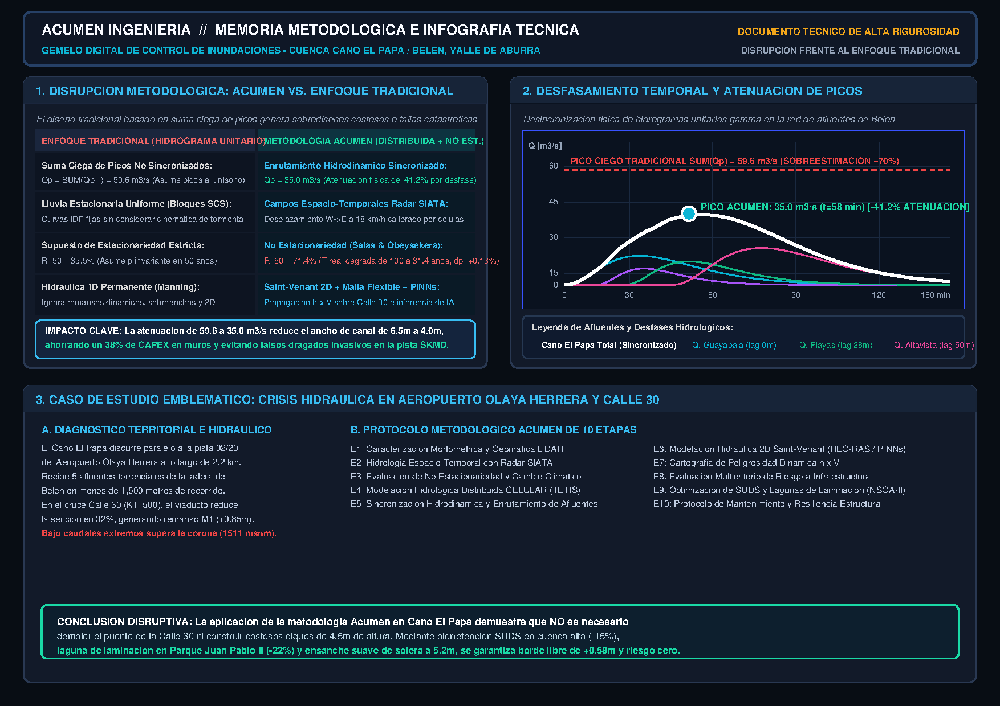

ACUMEN OS
DIGITAL TWIN // CAÑO EL PAPA
3D Gemelo Digital
3D
Mapa 2D Riesgo
2D
Perfil Hidráulico
Perfil
PDF
Memoria Metodológica (PDF)
PDF
SIMULACIÓN HIDRÁULICA ACTIVA
ACUMEN OS // MEMORIA METODOLÓGICA E INFOGRAFÍA TÉCNICA
ALTA RIGUROSIDAD
Pág. 1: Física y Disrupción
Pág. 2: TETIS & Salas-Obeysekera
Pág. 3: 2D & PINNs / IA
Descargar PDF Oficial
✕

Q Confluencia:
35.0
m³/s
Calado (h):
2.42
m
Velocidad (V):
3.15
m/s
Borde Libre:
0.58
m
Riesgo (R 50a):
71.4
%
N
S
RUMBO: 015° NNE
Órbita 3D: Clic y arrastrar para rotar | Rueda para zoom | Canal despejado
👆 1 dedo rota 3D | 2 dedos zoom
Hidrogramas Sincronizados de Tributarios vs. Caño El Papa
Hidrogramas Caño El Papa
Tiempo:
45 min
Ocultar ▼
Ocultar ▼
Caño El Papa (Total Sincronizado)
Q:
35.0 m³/s
Q. La Guayabala
Q:
14.5 m³/s
Caño Panorama
Q:
8.2 m³/s
Q. Las Playas
Q:
11.7 m³/s
Caño San Bernardo
Q:
6.8 m³/s
Q. Altavista
Q:
18.4 m³/s
⚙️ PARÁMETROS & MITIGACIÓN
✕ Listo
No Estacionariedad (Salas & Obeysekera)
Vida Útil de Diseño (n)
50 años
Período de Retorno Nominal (T)
100 años
Tendencia Climática (Δp / año)
+0.06%
Riesgo Acumulado:
R = 1 - ∏(1 - p_t)
T No Estacionario:
T_real =
38.2 años
Rediseño y Mitigación (Etapa 9)
SUDS en Cuenca Alta
Biorretención y pavimentos (-15% caudal)
Laguna de Laminación
Retención temporal en Confluencia Panorama (-22% pico)
Ampliación de Sección
Ensanche de solera Caño El Papa (+1.2m)
Disrupción Metodológica: Acumen vs. Tradicional
Enfoque Tradicional (Picos Ciegos)
Suma algebraica no sincronizada (59.6 m³/s)
Caudal Pico Acumen:
35.0 m³/s (-41.2%)
Caudal Tradicional (Hidrog. Unit.):
59.6 m³/s (+70.3%)
Riesgo No Estacionario (R₅₀):
71.4% vs 39.5% estac.
Ahorro Estimado CAPEX:
~38% (Canal 4.0m vs 6.5m)
Etapa 10: Obstrucción y Mantenimiento
Colmatación / Palizadas en Puente Cll 30
0%
Efecto Remanso Adicional:
Δh_obs =
+0.00 m
Sección libre sin palizadas ni sedimentos.
Parámetros & SUDS